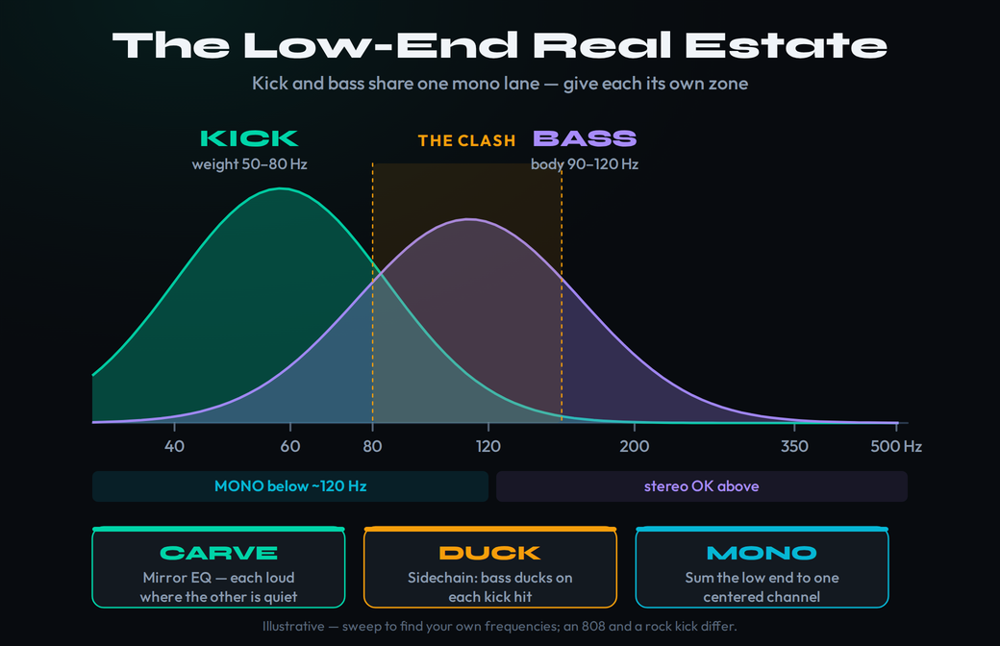
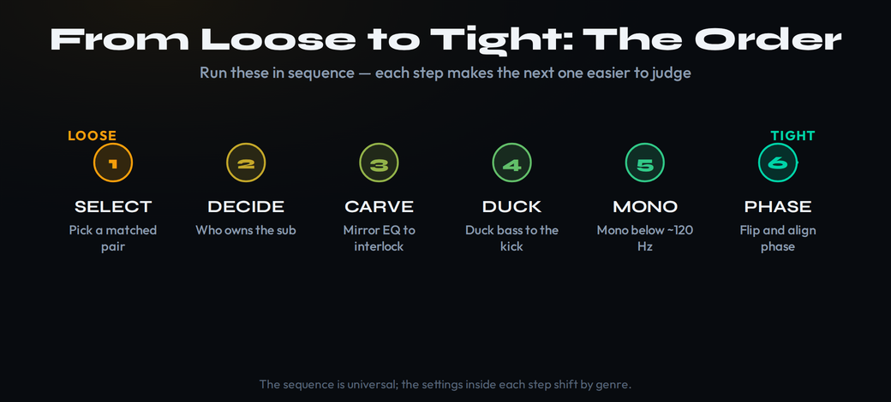
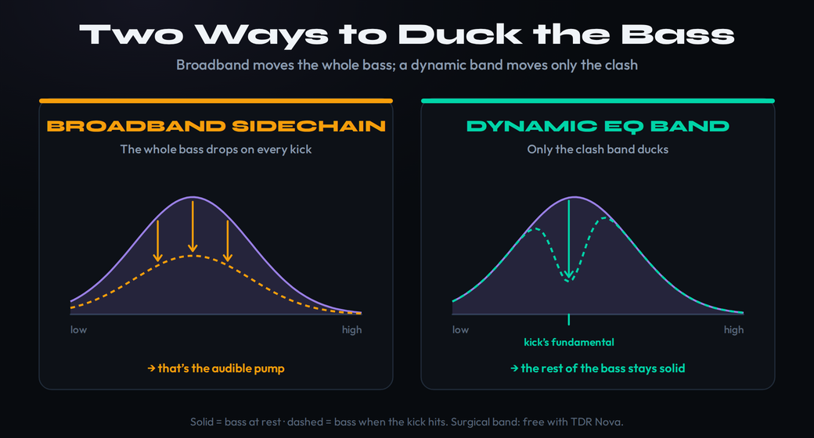

Your low end is the part of a mix that sounds easy and turns out to be the hardest. You drop in a kick that thumps in solo and a bass that sounds huge on its own, you play them together, and the bottom of the track collapses into a loose, undefined thud — sometimes muddy, sometimes weak, sometimes both at once with no real punch anywhere. The reason is almost never that either sound is bad. It’s that the kick and the bass live in the same place — the same narrow strip of low frequency, summed to mono — and when two heavy sounds share one piece of real estate, they mask each other instead of reinforcing. This page is about the relationship, not the individual sounds: how to make a kick and a bass occupy the same bottom octave without fighting, in a repeatable order you can run on any track. We’ll start with the cheapest fix (choosing a complementary pair) and end with the surgical ones (dynamic sidechain, mono management, phase), and you’ll see why “turn one down” is the one move that never works.
Kick and bass clash because they share the mono low end and mask each other. The fix isn’t one trick — it’s a decision plus an order. Decide who owns the sub (let one element own roughly 50–80 Hz, the other sit just above), then work down the chain: pick a complementary pair, carve with mirror EQ (boost the kick’s punch where you cut the bass, and vice versa), duck the bass under the kick with sidechain, go mono below ~120 Hz, and check phase. The surgical version of the duck is a dynamic-EQ band on the bass at the kick’s fundamental, triggered by the kick — it only moves the clashing frequency, only when the kick hits. Frequencies here are typical starting points, not law: sweep to find your own.
Why kick and bass fight
Two facts about the bottom of a mix explain almost every low-end problem you’ll ever have. The first is that the kick drum and the bass are the two heaviest elements in nearly every modern production, and they both put most of their energy into the same place: the region from roughly 40 Hz up to about 150 Hz. The kick’s weight and the bass’s fundamental are stacked on top of each other, often within an octave. The second fact is that this region is, in practice, mono — club systems, phone speakers, Bluetooth boxes, and most playback sums the lowest frequencies to a single channel because there is no perceptible stereo information that low. So your kick and bass are not just close in frequency; they are sharing one narrow, mono lane, and that is the most contested piece of space in the entire mix.
When two sounds overlap in frequency and play at similar levels, the louder one masks the quieter one — the ear stops resolving them as two separate events and hears a single thick blur. That blur is what people describe three different ways depending on which symptom annoys them most. If the combined energy is too high, it reads as muddy — a congested, woolly bottom with no clarity. If the two transients smear into each other, it reads as no punch — the kick’s attack gets buried under the sustain of the bass, so nothing hits. And if you reflexively turn one of them down to stop the clash, it reads as weak — you traded the collision for a hole. Muddy, punchless, and weak are not three problems. They are three faces of the same problem: two elements fighting for one lane.
This is why the kick–bass relationship is the cornerstone of a mix and why so many tracks that sound “almost there” are really just losing the bottom. Get the relationship right and the whole mix seems to open up — the kick punches, the bass is felt and heard, and there’s suddenly room above them for everything else. Get it wrong and no amount of careful work higher up will rescue it, because every other decision in the mix sits on top of the low end. If you’ve read our guide to why a mix sounds muddy, this is the same lesson aimed at its single biggest cause: the low-mids pile up partly because the foundation underneath them was never carved. The good news is that the fix is mechanical once you stop treating it as a mystery. It’s a sequence of decisions, and the first one isn’t a plugin at all.

Step 0: fix it in the choice, not the mix
The cheapest, most powerful low-end fix happens before you touch an EQ: pick a kick and a bass that already complement each other. Two sounds clash because their energy lands in the same spot; the simplest way to stop that is to choose sounds whose energy lands in different spots from the start. A kick with its weight down around 50–60 Hz and a punchy click up top pairs naturally with a bass whose body sits a little higher around 80–120 Hz, because each one is loud where the other is quiet. Swap in a boomy, sub-heavy kick under that same bass and you’ve manufactured a collision that you’ll then spend an hour carving back out. The producers whose low ends always sound effortless are usually not better at EQ — they audition pairs until they find one that fits, and then they barely process it.
To audition a pair properly, listen to them together, looped, on a real low-end source, not soloed one at a time. Solo tells you whether a sound is good; the loop tells you whether two sounds get along. Drop a candidate kick and bass on the same two-bar loop and ask three questions: does the kick’s attack still cut through when the bass is sustaining, does the bass stay defined when the kick lands, and does the combined bottom feel tight or loose? If it’s already tight, you’re most of the way home and the rest of this page is a light touch-up. If it’s loose, try a different kick before you try a different plugin — it’s faster and it sounds better.
Sample libraries make this easy and producers still skip it. When you’re browsing kicks, browse them against the bass that’s already in the session rather than in isolation, and keep the two or three that lock in immediately. The same applies in reverse: if your kick is fixed (it’s the genre’s signature, or it’s already printed), shape the bass patch to dodge it — roll off the bass where the kick is heaviest at the synth or sampler before it ever reaches the mixer. A bit of subtractive design at the source removes a problem that would otherwise need a chain of plugins to manage. Sound selection is the one stage of the low end where the right decision costs you nothing in tone, because you never added the conflict in the first place. Everything after this section is for when selection alone isn’t enough — which, in a dense arrangement, it usually isn’t.
The one decision: who owns the sub
Before any processing, make the single most important choice in low-end mixing: which element owns the sub-bass. The deep weight below roughly 80 Hz is a single seat, and only one instrument can sit in it cleanly. If both the kick and the bass try to own the sub, they double up the lowest energy and you get that loose, flubby bottom that has plenty of level and no definition. Pick one to be the foundation and let the other live just above it. Everything downstream — the EQ carve, the ducking, the mono check — is just enforcing this decision.
The choice is genre-led, and it usually comes down to whether the bass is a sustained, pitched instrument or a transient drum. In most electronic and rock music the kick owns the sub: it’s the rhythmic anchor, its lowest thump defines the groove, and the bass sits a touch higher carrying the notes and the harmonic information. In a lot of hip-hop and trap the relationship flips, because the 808 is the bass — it’s a pitched sub that is the low end, so it owns the bottom and the kick becomes a shorter, clickier transient layered on top to give the 808 an attack. Neither is more correct; they’re different jobs. What you can’t do is leave it undecided, because an undecided sub is two instruments both reaching for the same note.
A fixed-pitch element wins ties. A kick has one tuned thump that doesn’t move; a bassline plays different notes that wander up and down the register. When a defined, unchanging slot is up for grabs, give it to the element that always sits in the same place — usually the kick — and let the moving part work around it. That’s why the standard split lets the kick keep its constant 50–70 Hz foundation while the bass owns its punch and presence a little higher; the bass can play a low note without colliding because you’ve agreed in advance that the very bottom belongs to the kick. Write the decision down for the track in one sentence — “kick owns the sub, bass owns 90–120 Hz” — and every later move becomes obvious, because you’re no longer asking “what should I cut” but “how do I enforce the lane I already chose.”
Carve them apart with mirror EQ
Once you’ve decided who owns the sub, EQ is how you enforce it. The technique is complementary or mirror EQ: you boost each element where it should be loud and cut it where the other one needs to be loud, so they interlock instead of overlap. Done right, both instruments end up present and forward — you’re not weakening either one, you’re assigning them different frequencies to be strong in. This is the highest-leverage processing move in the whole low end, and it starts with finding the exact frequencies rather than copying numbers off a chart.
Find the kick’s punch by frequency-fishing the same way you’d hunt mud: put a narrow EQ bell with a few dB of boost on the kick and sweep it slowly through roughly 60–200 Hz until you hit the spot where the kick suddenly sounds most solid and punchy. That’s the kick’s home. Often it’s a weight zone around 50–80 Hz and a separate punch or “knock” around 100–150 Hz — sweep to find yours, because an 808-style kick and a tight rock kick land in very different places. Leave a modest boost there on the kick, then go to the bass and cut a dip at that same punch frequency, so the bass steps out of the way exactly where the kick wants to land. Then do the reverse: find the bass’s fundamental and warmth (often somewhere in 80–120 Hz, again verified by sweep), boost gently there on the bass, and cut the kick a little in that spot. Each instrument is now loud where the other is quiet.
The other half of the carve is housekeeping that costs nothing: high-pass everything that isn’t the kick or bass up out of the low end so nothing else is crowding the lane. Guitars, keys, pads, vocals, and reverb returns all carry low-frequency weight they don’t need; filtering it out (each track set just below its lowest useful note) clears enormous room for the two elements that actually belong down there. Our guide to EQ’ing bass goes deeper on shaping the bass itself, and the reference-track habit tells you how much low-end weight is normal for your genre so you don’t over-carve. If you want to see the overlap instead of hunting it by ear, run the two elements through the Frequency Conflict Detector — it shows you exactly where the kick and bass are masking each other so you cut with evidence rather than a guess.
Two cautions keep the carve clean. First, prefer cuts to boosts — a 3 dB cut on the bass where the kick lives does more, and adds less energy, than a 6 dB boost on the kick trying to shout over it. Mirror EQ is mostly subtractive. Second, don’t carve so aggressively that you hollow out either instrument; the goal is two solid sounds in different spots, not two thin ones. If you find yourself cutting deep notches all over both tracks and they still clash, the problem probably isn’t frequency — it’s timing or phase, and EQ can’t fix those. That’s where the next two moves come in.
Duck the bass under the kick
EQ separates kick and bass by frequency; sidechain ducking separates them in time. The idea is simple: for the brief instant the kick hits, pull the bass down a couple of dB so the kick’s transient punches through cleanly, then let the bass spring right back. The two elements take turns in the spotlight instead of fighting for it simultaneously. This is the move responsible for the tight, “pumping” low end in a lot of dance music, but in subtler amounts it’s useful in almost every genre, because it guarantees the kick’s attack is never buried under the bass’s sustain.
There are two flavors, and they’re for two different jobs. A sidechain compressor on the bass, triggered by the kick, is the classic tool: a fast attack so it ducks immediately when the kick lands, and a release timed to recover before the next hit (often somewhere around 30–120 ms, or dialed to the tempo). A gentle ratio around 2:1 and a couple of dB of gain reduction is plenty for “glue”; crank it harder and you get the obvious EDM pump. The compressor reads the actual kick signal, so it follows any rhythm — ideal when the kick pattern isn’t a steady four-on-the-floor. Our sidechain compression guide walks through the routing, and the DAW-specific steps are in the Ableton, FL Studio, and Logic Pro walkthroughs.
The other flavor is a volume-shaper tool — an LFO drawing a repeating duck curve synced to the beat, rather than a compressor responding to audio. Plugins like Cableguys’ Kickstart 2 (around $16, with audio- and MIDI-triggering so it follows non-4/4 patterns too), LFOTool, and VolumeShaper fall here. They’re technically modulators, not compressors, and they shine for the deliberate, musical EDM pump because you draw the exact shape of the duck and it’s perfectly consistent every bar. Kickstart 2 even adds a band-split so only the lowest frequencies duck — the “invisible sidechain” trick where the bass stays solid and present while the very bottom gets out of the kick’s way. Choose by intent: compressor for transparent glue that tracks an irregular kick, volume-shaper for a rhythmic pump you want to feel.
However you duck, set the depth by ear in the full mix, not in solo. A duck that looks dramatic on the meter often disappears in context, and a duck that feels right soloed is usually too much once everything plays. Start with the smallest amount that lets the kick poke through, and only go deeper if you actually want the pump as an effect. Ducking is a finisher on top of the EQ carve, not a replacement for it — if two sounds clash badly in frequency, ducking just makes the clash rhythmic instead of constant. Carve first, then duck to taste.
The surgical move: dynamic and multiband sidechain
Broadband ducking has a cost: it pulls down the whole bass for the duration of every kick, including the mid and high content that was never clashing in the first place. For a pumping effect that’s fine — you want the movement. But when you only want the kick and bass to stop colliding at the bottom while keeping the bass solid and constant everywhere else, you need a scalpel, not a hammer. That scalpel is dynamic EQ triggered by the kick, and it’s the move that separates a clean pro low end from a serviceable one.
Here’s the setup. Put a dynamic EQ on the bass, create a band at the kick’s fundamental — the frequency you found by sweeping the kick earlier, often somewhere around 60–150 Hz — and route the kick into the plugin as an external sidechain trigger. Now that single band ducks only when the kick hits and only at the clashing frequency; the rest of the bass — its body, its note definition, its harmonics — stays completely untouched and constant. You get the kick’s clarity without the audible pumping of a broadband duck, because 95% of the bass never moves. This is the technique that makes a low end sound both punchy and rock-solid at the same time.
You don’t need an expensive plugin for it. The free TDR Nova does external-sidechained dynamic EQ beautifully: drop it on the bass, set one band near the kick’s fundamental with a medium-to-narrow Q, feed it the kick as a sidechain, and dial the threshold and ratio until the band ducks just enough on each hit — many engineers start with a band somewhere around 100–150 Hz and adjust by ear. It costs nothing and does the job the marketing material attaches to plugins ten times its price. If you already own FabFilter’s Pro-Q 4 ($179), every one of its bands can be made dynamic with an external trigger, so you can do this carve inside the same EQ you’re already using to shape the bass — one band, dynamic, sidechained to the kick. Multiband sidechain compressors like Waves C6 or iZotope Neutron’s Unmask reach the same destination from a different direction, ducking a chosen band of the bass when the kick triggers them.
The reason this beats broadband ducking for “invisible” separation is worth stating plainly: masking is frequency-specific, so the cure should be too. The kick and bass only genuinely fight in the narrow band where their energy overlaps. A dynamic band addresses exactly that overlap and leaves everything else alone, which is why the bass can stay loud, present, and constant while still making room for the kick. Reach for the broadband duck when you want the pump as a sound; reach for the dynamic band when you want the clash gone and the listener never to know you did anything. Our multiband compression guide covers the band-splitting logic in more depth if you want to push it further.
Lock the low end to mono — and check phase
You can carve and duck perfectly and still lose the bottom to a problem that lives in neither frequency nor time: phase. Low frequencies are long waves, and when two versions of the same low energy arrive slightly out of step — from stereo widening, from a stereo bass patch, from heavy stereo reverb on a low element, or just from the kick and bass waveforms not lining up — they partially cancel. Cancellation in the low end doesn’t sound like an obvious glitch; it sounds like a bass that’s mysteriously thin and undefined despite plenty of level, or a low end that vanishes the moment a track plays on a mono system. The fix has two parts, and both are quick.
First, collapse the low end to mono below roughly 120 Hz. Use a utility or a mid/side EQ to force everything under that line to a single centered channel — the bass and kick keep their stereo information above it if they have any, but the foundation becomes one solid, in-phase signal. This instantly tightens a flabby bottom, guarantees the low end survives the mono summing that club PAs and phones impose, and removes the stereo-phase cancellation that was robbing the bass of weight. It’s a near-universal move on modern low ends and it costs nothing in perceived stereo width, because there was no useful stereo information down there to lose. Our guide to mixing in mono explains why this single habit catches low-end problems that monitoring in stereo hides, and the Bible entry on mono compatibility covers the underlying principle.
Second, check the polarity relationship between the kick and the bass. Solo the two together and flip the polarity (the Ø button) on one of them; listen to whether the combined low end gets fuller or thinner. Pick the orientation where they reinforce rather than cancel — sometimes a simple polarity flip recovers a surprising amount of weight that was quietly cancelling away. If a flip helps but doesn’t fully fix it, the kick and bass transients may be misaligned in time, and nudging one a few milliseconds so their initial peaks agree can lock them together. The Bible entry on phase goes deeper, and the principle is the same throughout: two low sounds that agree in phase add up to more than the sum of their parts, and two that disagree subtract. Get them agreeing and the bottom suddenly has the weight you thought you’d lost.

Finishing moves: tail, saturation, and translation
With the lane decided, the carve cut, the duck set, and the low end mono and in phase, three finishing moves take a good kick–bass relationship and make it translate everywhere. The first is kick-tail shaping. A kick with a long, ringing tail bleeds its sustain right into the bass’s territory, re-creating the very overlap you just carved out. Use a transient shaper or a volume envelope to shorten the kick’s decay so it delivers its punch and then gets out of the way, leaving the sustained low energy to the bass. A tight kick and a sustained bass interlock cleanly; a boomy, ringing kick and a sustained bass smear back into mud no matter how well you EQ’d them.
The second is complementary saturation. Run a little distortion or saturation on the kick and the bass — but reach for different flavors so they generate harmonics in different places rather than stacking new energy in the same spot. Beyond keeping them separated, saturation does something crucial for the low end specifically: it adds higher harmonics that let a sub-heavy sound be heard on speakers that can’t reproduce the fundamental at all. A phone, a laptop, an earbud has no real output below 100 Hz — but if your 808 or your sub-bass carries saturated harmonics up in the hundreds of hertz, the listener’s ear reconstructs the missing fundamental and the bass “reads” even on a device that physically can’t play it. Our guide to using saturation covers the even- versus odd-harmonic choices, and parallel processing lets you add that grit in a blendable layer so you don’t cook the clean low end.
The third is metering and reference, used honestly. Your room and your ears lie about the low end more than about any other part of the spectrum, so don’t trust either alone. Pull up a commercial reference in your genre, match its loudness roughly, and A/B the bottom: is the reference’s kick more defined, its bass more even across notes, its low end tighter? An oscilloscope or a simple level meter on the kick and bass helps you balance them so neither buries the other — roughly matched and interlocked, not one shouting over the other. And before you call it done, run the full mix through the Mix Fingerprint Analyzer for a read on your low-end balance against genre targets — it flags whether your bottom is genuinely heavy or whether your room was fooling you. The audio never leaves your browser; you just get the diagnosis. Reference and metering don’t make the decisions for you, but they end the argument about whether the low end is actually right.

The genre playbook
The order of operations is universal; the settings inside it shift by genre, because the kick–bass relationship means different things in different music. In EDM and house, the kick is king: it owns the sub, the sidechain duck is often deliberately audible (the pump is part of the sound), and the bass is shaped to sit above and around the kick’s constant thump. Lean into a volume-shaper for that rhythmic movement, mono the bottom hard, and let the four-on-the-floor kick anchor everything. Our walkthroughs on 808 design and the broader mixing flow apply directly here.
In hip-hop and trap, the relationship usually flips: the 808 is the bass, so it owns the sub and carries the notes, and the kick becomes a shorter, punchier transient layered on top to give the 808 an attack it doesn’t have on its own. The work here is tuning the 808 to the key, gluing the kick and 808 together (sometimes treating them as a single stacked sound), and keeping the kick short so it adds click without competing for the sustain. The mono and saturation moves matter even more, because the 808 is the low end and it has to translate to phones that can’t play it. In rock and metal, the bass guitar and the kick lock together as a rhythmic unit: the kick often gets a beater click up in the 2–5 kHz region to cut through distorted guitars, the bass fills the body underneath, and the two are EQ’d so the kick’s click and the bass’s grind don’t mask each other. Same decision, same order — who owns the sub, carve, duck, mono, phase — just tuned to what the genre asks the low end to do.
Lock In the Low End: 3 Drills
Run these in order on a real track. Each one builds a piece of the kick–bass relationship so you stop guessing and start deciding.
- Loop a two-bar section with your kick and bass playing together — not soloed one at a time.
- Swap through three different kicks against the same bass and listen for which pair stays tight: the kick’s attack cuts through, the bass stays defined, the bottom feels solid.
- Keep the pair that locks in immediately. You just did the cheapest low-end fix there is — before adding a single plugin.
- Decide in one sentence who owns the sub (e.g. “kick owns 50–70 Hz, bass owns 90–120 Hz”).
- Sweep a narrow boost on the kick to find its punch; leave a small boost there and cut the bass a few dB at that same frequency. Then reverse it for the bass’s fundamental.
- High-pass every non-bass track up out of the low end, then check the carve in mono. Both elements should be present and distinct, not thinned out.
- Put a dynamic EQ (free: TDR Nova) on the bass and create one band at the kick’s fundamental with a medium-to-narrow Q.
- Route the kick in as an external sidechain trigger and set the threshold and ratio so that band ducks just enough on each kick hit — and nowhere else.
- Bypass and compare. The kick should punch through clearly while the bass stays solid and constant, with no audible pumping. That’s the invisible separation pros rely on.
Frequently Asked Questions
Neither should bury the other — the goal is two interlocked elements, not a winner. Roughly match their perceived levels so they share the low end rather than mask it, then use frequency (mirror EQ) and timing (sidechain) to separate them, not volume. If you find yourself turning one down to stop a clash, you’re trading a collision for a weak spot; carve and duck instead. As a rough starting point, set the kick and bass balance first, in mono, before anything else in the mix sits on top of them.
The frequency where your specific kick is heaviest — which you find by sweeping, not by copying a number. Put a narrow EQ boost on the kick and sweep 60–200 Hz until it sounds most solid; that’s often somewhere around its weight (50–80 Hz) or its punch (100–150 Hz). Boost the kick lightly there and cut the bass a few dB at that same spot. An 808 and a tight rock kick land in very different places, so treat any printed number as a starting guess and let the sweep tell you the truth.
Not always, but it usually helps. If your EQ carve and sound selection already give you a tight, distinct low end, you may not need ducking at all. Where the kick’s attack still gets buried under the bass, a light sidechain — even a couple of dB of ducking on the bass when the kick hits — lets the transient through cleanly. Use a broadband sidechain when you want the audible EDM pump, and a dynamic-EQ band when you want the clash gone without any noticeable pumping. It’s a finisher on top of EQ, not a substitute for it.
Because mud only exists in the sum. Each sound is fine in solo, but they overlap in the same low band, and when they play together that shared energy stacks into congestion the ear can’t resolve. The fix is to separate them — decide who owns the sub, carve with mirror EQ so each is loud where the other is quiet, duck the bass under the kick, and lock the bottom to mono. It’s the same lesson as a muddy mix in general, aimed at its biggest single cause.
The low end of both, yes. Collapse everything below roughly 120 Hz to mono — it tightens the bottom, removes stereo phase cancellation that thins the bass, and guarantees the low end survives the mono summing that club systems and phones impose. The bass and kick can keep stereo information above that line if they have any, but the foundation should be a single, centered, in-phase signal. This is one of the highest-value, lowest-cost moves on any modern low end.
Treat the 808 as the bass — it owns the sub and carries the notes — and treat the kick as a short, punchy transient layered on top to give the 808 an attack. Tune the 808 to the key of the track, keep the kick short so it adds click without competing for the sustain, and consider gluing the two together as a stacked sound. Saturation is essential here because the 808 has to translate to speakers that can’t reproduce its fundamental, and mono keeps it tight. See our guide to making trap 808s for the design side.
A sidechain compressor ducks the whole bass when the kick hits — great for a pumping effect, but it moves frequencies that were never clashing. A dynamic EQ ducks only one band — the kick’s fundamental — and only when the kick triggers it, leaving the rest of the bass untouched and constant. Use the compressor when you want the pump as a sound; use the dynamic band when you want the clash gone invisibly. The free TDR Nova does the dynamic-EQ version with an external sidechain at no cost.
Phones and laptops can’t reproduce the deep fundamental of a kick or sub-bass at all, so a low end built purely on sub energy vanishes on them. The fix is saturation: adding higher harmonics in the hundreds of hertz lets the listener’s ear reconstruct the missing fundamental, so the bass “reads” even on a speaker that physically can’t play it. Combine that with mono summing below ~120 Hz and a quick check on actual phone and laptop speakers, and a low end that only worked on monitors starts translating everywhere.